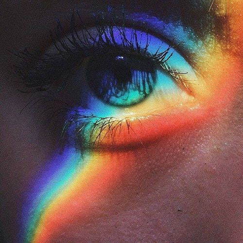

|
Синестезия — это редкий психологический феномен, при котором человек соединяет сигнал от одного органа чувств с сигналом от другого, хотя для связи между ними нет никаких видимых причин. |
Синестет — человек, обладающей синестезией. Слушая музыку, он воспринимает ее в виде линий, фигур и цветовых пятен. Или, слыша какое-то слово, может ощущать его вкус.
 |